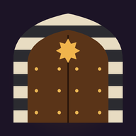

Le chemin du savoir islamique
Un jeu en 3D où tu marches dans les vieilles ruelles de Damas. Chaque porte s'ouvre avec une bonne réponse, et le mur de pierre au bout de chaque ruelle tombe avec la dernière réponse. Tu ramasses des pièces d'or, sautes par-dessus les tonneaux et les pierres, et salues les commerçants.
Les niveaux
- Niveau un · Ruelles de Damas : pierre bicolore, moucharabiehs et passages couverts.
- Niveau deux · Ruelles de marbre : marbre orné d'incrustations arabes.
- Niveau trois · Citadelle de Damas : entre ses remparts jusqu'à la grande citadelle.
- Niveau quatre · Souks de Damas : de grands souks gardés par des sentinelles, et des questions tirées de « Riyad as-Salihin ».
Chaque niveau commence par une première ruelle, puis tu choisis dans la cour entre les portes du Fiqh, de la Sîra et du Hadith. Les questions deviennent plus difficiles au fil du jeu.
La terre des chercheurs de savoir
Pour chaque ruelle terminée, des ouvriers construisent une partie de ta maison damascène dans un grand jardin en 3D, jusqu'à ce qu'elle soit complète avec 12 parties. Les maisons sont regroupées en quartiers par pays, et tu peux visiter la maison d'un ami.
Les langues
Arabe, anglais, français, espagnol, indonésien, hindi et ourdou. Le jeu choisit automatiquement la langue de ton appareil, et tu peux la changer avec le bouton 🌐 du menu principal.
Les questions
Plus de 200 questions, rédigées à partir du Saint Coran, de la Sunna authentique, de la biographie du Prophète et de « Riyad as-Salihin » de l'imam an-Nawawi. Si tu trouves une question avec une erreur, ou avec plusieurs réponses possibles, dis-le-nous pour que nous la corrigions.
Signaler une erreur dans une question
Les commandes
- Glisse ton doigt n'importe où sur l'écran pour marcher.
- Le bouton de saut, dans le coin, permet de sauter par-dessus les obstacles.
- Le bouton ❚❚ en haut met le jeu en pause.
Remerciements
Réalisé avec three.js, et les polices IBM Plex Sans Arabic et Reem Kufi (licence OFL). La voix « Ahsant » (bravo) est celle de l'auteur du jeu.
Jouer maintenant